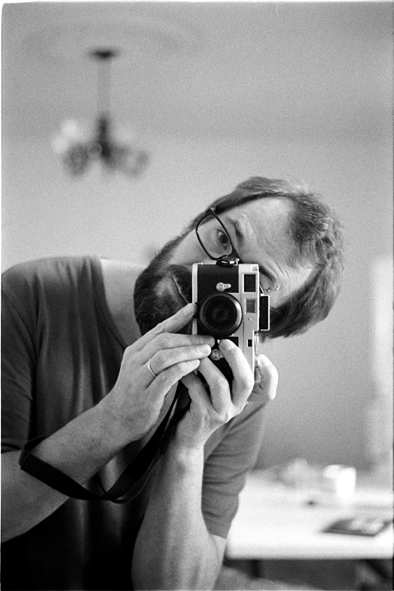

Hello there!
I'm Alexey Pegov, and this website showcases my photography work. However, if you're looking for something different, I also have dedicated spaces for my professional work and blog (which is in Russian).
Over the past two decades, I've found immense enjoyment in software development.
In addition to my passion for coding, I have a deep love for capturing moments on black and white film with vintage cameras, including one from the 1960s and another from the early 1980s.
I hope you have an enjoyable experience while visiting my site.
ps: You can reach me at iam[at]alexeypegov.com.
2023